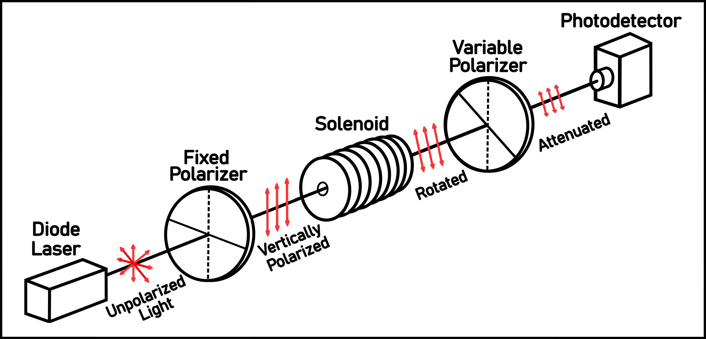

A polarizer reduces the intensity of incoming light by transmitting only the component that is polarized along its transmission axis.
When light travels through a medium in the presence of a magnetic field, its polarization rotates due to different phase velocities of its circularly polarized components.
The rotation angle is proportional to the material's Verdet constant, which quantifies how strongly the material responds to an applied magnetic field.
Key Challenge: Measurements using a DC magnetic field were found to be greatly limited by noise. Applying an AC magnetic field and using oscilloscope vs. lock-in detection improved signal extraction,
with the highest signal-to-noise ratio obtained from direct waveform analysis.